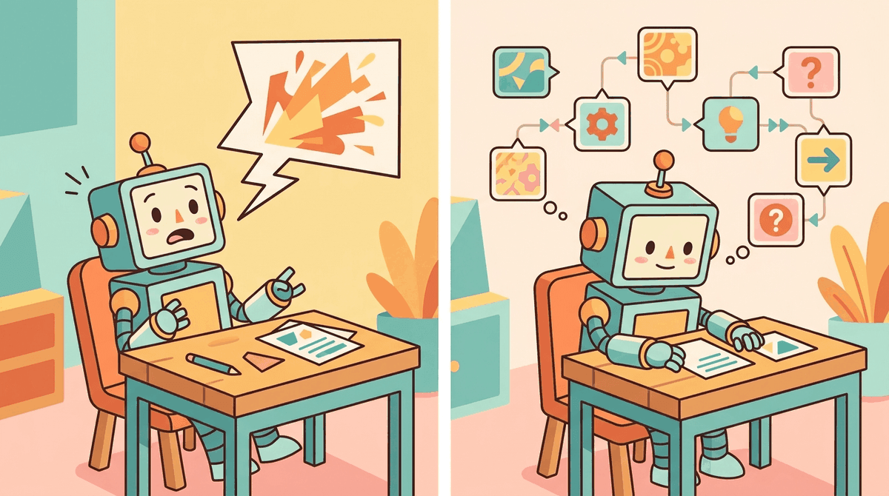

"Reasoning is not what the model does. Reasoning is what the computation does when the model is forced to show its work."
Frontier, Show Your Work AI Agent
Can large language models actually reason, or do they merely simulate reasoning through sophisticated pattern matching? This question is no longer purely philosophical. Formal frameworks now let us characterize which reasoning tasks transformers can and cannot solve, under what conditions chain-of-thought prompting provably increases expressive power, and where compositional reasoning hits fundamental limits. Understanding these theoretical boundaries is essential for building reliable reasoning systems and for knowing when to trust (or distrust) a model's outputs.
Prerequisites
This section builds on Section 8.1: Chain-of-Thought Reasoning, the discussion of test-time compute in Section 8.2, and the emergence debate from Section 6.3. Familiarity with basic computational complexity (P vs. NP) and probability theory is helpful.

76.1.1 What Do We Mean by "Reasoning"?
Xie et al. (2021) showed that a large language model doing in-context learning behaves like a Bayesian learner: each demonstration updates an implicit posterior over the latent concept the examples represent. This predicts observable behavior. Good demonstrations should be diverse and representative (i.i.d. from the target distribution). Contradictory or biased examples corrupt the posterior and degrade performance measurably. If order of examples strongly affects output, the model is doing sequential rather than full Bayesian updating. Designing few-shot prompts as if designing a Bayesian evidence set produces more reliable results than trial-and-error.
The word "reasoning" is used loosely in the LLM literature to describe everything from basic arithmetic to multi-step logical deduction. Before we can build a theory of reasoning in LLMs, we need to establish what we are trying to explain.
In classical AI, reasoning was defined procedurally: a system reasons if it applies rules of inference to premises to derive conclusions. In cognitive science, the dominant framework distinguishes between System 1 (fast, intuitive, parallel) and System 2 (slow, deliberate, sequential) thinking, following Kahneman's influential taxonomy. A key question for LLM research is where autoregressive generation falls on this spectrum.
System 1 and System 2 in the Context of LLMs
A standard transformer forward pass, producing one token in a single pass through the network, is analogous to System 1 processing. The computation is fixed-depth: regardless of the difficulty of the input, the model applies the same number of layers (and thus the same number of computational steps) before producing its output. This fixed-depth constraint is a fundamental architectural limitation. A 32-layer transformer performs exactly 32 sequential processing steps per token, whether the question is "What is 2+2?" or "Prove the Riemann hypothesis."
Chain-of-Thought (CoT) prompting, where the model generates intermediate reasoning steps before producing a final answer, can be understood as a mechanism for converting System 2 problems into a sequence of System 1 operations. Each token generation step is still a fixed-depth forward pass, but by generating many tokens, the model effectively increases the total number of serial computation steps. This is the core insight behind the theoretical analysis of CoT: it extends the computational depth of the transformer beyond its architectural limit.
76.1.2 Chain-of-Thought as Emergent Computation
Several recent theoretical results have formalized the computational benefit of chain-of-thought reasoning. The central result, established independently by Feng et al. (2023) and Merrill and Sabharwal (2024), can be stated as follows: constant-depth transformers without CoT can only solve problems in the complexity class $\mathsf{TC}^0$ (constant-depth threshold circuits), while transformers with CoT can solve problems in $\mathsf{P}$ (polynomial time), given sufficient chain length.
This is a provable separation under the formal model used in those papers (idealised log-precision attention, suitably structured chain tokens). Problems like graph connectivity, evaluating boolean formulas, and computing the greatest common divisor require sequential computation that cannot be parallelized into a constant number of steps. A transformer without CoT, no matter how wide or how many parameters it has, is conjectured under this formalism to be unable to solve them reliably. A transformer with CoT can, because the chain of reasoning tokens provides the sequential computation budget. The translation from this complexity-class result to deployed billion-parameter LLMs is informative but not literal: finite-precision arithmetic, decoding noise, and bounded chain lengths can each pull real models below the theoretical ceiling.
The Length-Depth Tradeoff
The theoretical framework reveals a fundamental tradeoff between chain length and problem complexity. For a reasoning problem that requires $k$ sequential steps, the chain-of-thought must contain at least $\Omega(k)$ tokens. In practice, the required chain length is often much larger than the theoretical minimum because the model must also encode intermediate representations in natural language, which is lossy and verbose compared to an optimal encoding.
This has direct implications for the cost of reasoning. If a problem requires $k$ sequential steps, and each step requires $c$ tokens of chain to encode, the total cost is $O(k \cdot c)$ tokens. At current pricing, this means that harder problems are linearly more expensive to solve, which creates an economic pressure toward efficient reasoning chains. This connects to the test-time compute scaling analysis in Section 8.2.
$$\text{Reasoning cost} \propto \text{(sequential depth of problem)} \times \text{(tokens per reasoning step)}$$A 5-step math proof requires $k = 5$ sequential reasoning steps, each encoded in roughly $c = 30$ tokens of chain. The total CoT length is $5 \times 30 = 150$ tokens. At $15 per million output tokens (a typical frontier model price), one reasoning chain costs $\frac{150 \times 15}{10^6} = 0.00225$ dollars. With best-of-$N = 8$ sampling for verification, the total cost per problem is $8 \times 0.00225 = 0.018$ dollars. A 10-step proof doubles the per-chain cost to $0.0045, and with $N = 16$ samples (more samples needed for longer chains) the cost rises to $0.072, a 4x increase for 2x more steps.
Faithfulness of chain-of-thought
A critical question is whether the tokens in a chain-of-thought actually reflect the computation the model is performing, or whether they are post-hoc rationalizations. Research by Turpin et al. (2024) and Lanham et al. (2023) found mixed evidence. In many cases, modifying the chain (for example, inserting an incorrect intermediate step) changes the final answer, suggesting the model does use the chain as a computational scratchpad. In other cases, the model arrives at the correct answer despite irrelevant or incorrect chain content, suggesting it is performing some computation internally that the chain does not capture.
This distinction matters for safety and interpretability. If chains are faithful, they provide a readable trace of the model's reasoning that humans can audit. If chains are unfaithful, they may give a false sense of understanding, making it harder to detect when the model is reasoning incorrectly. Current evidence suggests that faithfulness varies by task and model, with larger models showing somewhat higher faithfulness on structured reasoning tasks.
76.1.3 Process Reward Models and Verification
A natural extension of chain-of-thought reasoning is to evaluate not just the final answer but each step in the chain. Process Reward Models (PRMs) assign a score to each intermediate reasoning step, enabling verification of the reasoning process rather than just the outcome.
The key paper establishing PRMs is "Let's Verify Step by Step" (Lightman et al., 2023), which demonstrated that training a verifier to evaluate individual reasoning steps significantly outperforms outcome-based verification on mathematical reasoning tasks. The intuition is simple: if you can identify the first incorrect step in a reasoning chain, you can reject that chain early and try a different approach. Outcome-based verification can only accept or reject the entire chain based on the final answer, which wastes computation on chains that went wrong early.
The Verifier-Generator Framework
The combination of a generator (producing reasoning chains) and a verifier (evaluating each step) creates a powerful framework for reliable reasoning. The generator proposes multiple candidate reasoning paths, and the verifier scores each step along each path, selecting the path with the highest cumulative step-level score. This is sometimes called "best-of-N with process verification."
Formally, given a problem $x$ and $N$ candidate chains $c_1, \ldots, c_N$, where each chain $c_i$ consists of steps $s_{i,1}, \ldots, s_{i,T_i}$, the process reward model selects:
$$c^* = \arg\max_{c_i} \sum_{j=1}^{T_i} \text{PRM}(s_{i,j} \mid x, s_{i,1}, \ldots, s_{i,j-1})$$This framework has been adopted by several frontier reasoning systems. OpenAI's o1 and o3 models use internal process verification, and DeepSeek-R1 employs a similar approach with reinforcement learning to train the process reward signal.
The following code demonstrates a simplified implementation of process reward scoring for mathematical reasoning chains.
# Process reward model: score each step in a reasoning chain independently.
# Uses per-step scores to identify the weakest link and compute aggregate
# chain reliability as the product of individual step probabilities.
import torch
from dataclasses import dataclass
@dataclass
class ReasoningStep:
"""A single step in a reasoning chain."""
text: str
step_index: int
@dataclass
class ReasoningChain:
"""A complete reasoning chain with per-step scores."""
steps: list[ReasoningStep]
step_scores: list[float] | None = None
@property
def aggregate_score(self) -> float:
"""Product of step-level scores (probability all steps correct)."""
if not self.step_scores:
return 0.0
score = 1.0
for s in self.step_scores:
score *= s
return score
@property
def min_step_score(self) -> float:
"""Minimum step score (bottleneck step)."""
if not self.step_scores:
return 0.0
return min(self.step_scores)
def select_best_chain(
chains: list[ReasoningChain],
strategy: str = "product",
) -> ReasoningChain:
"""Select the best reasoning chain using process reward scores.
Strategies:
- "product": chain with highest product of step scores
- "min": chain with highest minimum step score (most reliable)
- "last": chain with highest score on the final step
"""
if strategy == "product":
return max(chains, key=lambda c: c.aggregate_score)
elif strategy == "min":
return max(chains, key=lambda c: c.min_step_score)
elif strategy == "last":
return max(
chains,
key=lambda c: c.step_scores[-1] if c.step_scores else 0.0,
)
else:
raise ValueError(f"Unknown strategy: {strategy}")
# Example: compare two reasoning chains for "What is 17 * 23?"
chain_a = ReasoningChain(
steps=[
ReasoningStep("17 * 23 = 17 * 20 + 17 * 3", 0),
ReasoningStep("17 * 20 = 340", 1),
ReasoningStep("17 * 3 = 51", 2),
ReasoningStep("340 + 51 = 391", 3),
],
step_scores=[0.95, 0.98, 0.97, 0.99], # all steps high confidence
)
chain_b = ReasoningChain(
steps=[
ReasoningStep("17 * 23 = 17 * 25 - 17 * 2", 0),
ReasoningStep("17 * 25 = 425", 1),
ReasoningStep("17 * 2 = 34", 2),
ReasoningStep("425 - 34 = 389", 3), # arithmetic error here
],
step_scores=[0.92, 0.96, 0.98, 0.45], # low confidence on last step
)
best = select_best_chain([chain_a, chain_b], strategy="product")
print(f"Selected chain score: {best.aggregate_score:.4f}")
# chain_a wins: 0.95*0.98*0.97*0.99 = 0.8935 vs 0.92*0.96*0.98*0.45 = 0.3893In the code above, Chain A has step scores [0.95, 0.98, 0.97, 0.99], giving a product score of $0.95 \times 0.98 \times 0.97 \times 0.99 = 0.894$ and a minimum step score of 0.95. Chain B has step scores [0.92, 0.96, 0.98, 0.45], giving a product of $0.92 \times 0.96 \times 0.98 \times 0.45 = 0.389$ and a minimum of 0.45. Under all three selection strategies (product, min, last), Chain A wins. The low score of 0.45 on Chain B's final step correctly flags the arithmetic error ($425 - 34 = 391$, not 389), demonstrating how process verification catches errors that outcome-only verification might miss if the final answer happened to be close.
Process verification turns reasoning from a single-shot gamble into a statistically robust procedure. Without verification, the probability of a correct answer on an $n$-step problem is roughly $p^n$, where $p$ is the per-step accuracy. With best-of-$N$ sampling and process verification, you can achieve much higher reliability because the verifier can identify and discard chains that go wrong early. The cost is linear in $N$ (you generate $N$ chains), but the reliability improvement is exponential in the number of steps where errors are caught. This is why process reward models have become a central component of frontier reasoning systems.
76.1.4 Compositional Reasoning and Its Limits
Compositional reasoning, the ability to combine known sub-skills to solve novel problems, is often considered a hallmark of genuine intelligence. A human who knows how to add and how to multiply can immediately solve "compute (3 + 5) * 7" without having seen that specific combination before. Do LLMs exhibit the same compositional generalization?
The evidence is mixed and task-dependent. On tasks with clear compositional structure (multi-step arithmetic, logical inference chains, code generation with nested function calls), frontier models show impressive compositional ability, especially with chain-of-thought. On tasks requiring novel combinations of concepts (analogical reasoning across distant domains, creative problem-solving, out-of-distribution generalization), performance degrades significantly.
The Composition Gap
Press et al. (2023) identified a "composition gap": even when a model can perform subtasks A and B individually with high accuracy, it often fails at the composed task "A then B." For example, a model might correctly identify that "Paris is the capital of France" and that "France is in Europe," but fail at the two-hop question "What continent is the capital of France's country on?"
The composition gap is related to the theoretical analysis of transformer depth. Each composition step requires sequential processing. If the model's effective depth (layers plus CoT tokens) is insufficient for the number of composition steps required, performance degrades. The gap narrows with more CoT tokens, confirming the theoretical prediction that chain length determines compositional capacity.
Formal Limits of Transformer Reasoning
Several results characterize what transformers provably cannot do, even with chain-of-thought:
- Inherently sequential problems. Problems that require $\Omega(n)$ sequential steps for inputs of size $n$ require CoT chains of at least that length. If the chain is truncated, accuracy drops sharply at the truncation boundary.
- Working memory constraints. A transformer's "working memory" is the set of tokens it can attend to. For problems requiring manipulation of more items than fit in the attention window, performance degrades. This is analogous to the human working memory limit of approximately 7 items (Miller, 1956).
- Systematic generalization. Dziri et al. (2024) showed that transformers struggle with systematic compositional generalization to sequences longer than those seen during training, even with CoT. A model trained on 5-step reasoning chains may fail on 10-step chains, even if the individual steps are identical to those seen in training.
76.1.5 When and Why Reasoning Fails
Understanding failure modes is as important as understanding capabilities. LLM reasoning fails in systematic, predictable ways that connect to the theoretical framework outlined above.
Distraction and Irrelevant Context
Shi et al. (2023) demonstrated that adding irrelevant information to math word problems significantly degrades LLM performance, even when the irrelevant information is clearly marked as such. For example, adding the sentence "There are 15 birds in the tree" to a problem about counting apples reduces accuracy substantially. This failure is consistent with the attention mechanism's inability to perfectly filter irrelevant tokens, especially when the irrelevant information shares semantic features with the relevant information.
Reversal Curse and Asymmetric Reasoning
Berglund et al. (2024) identified the "reversal curse": if a model is trained on "A is B," it does not automatically learn "B is A." For instance, a model trained on "Tom Cruise's mother is Mary Lee Pfeiffer" may not be able to answer "Who is Mary Lee Pfeiffer's son?" This asymmetry reveals that LLM "knowledge" is directional, encoded as conditional probabilities $P(\text{B} \mid \text{A})$ rather than as symmetric associations. Reasoning systems that rely on bidirectional inference (common in human reasoning) will encounter this limitation.
Counting and Tracking State
LLMs are notoriously poor at tasks that require maintaining and updating a counter or state variable across many steps. Counting the number of "r" letters in "strawberry" is a famous failure case. The theoretical explanation is straightforward: counting requires $O(n)$ sequential state updates, and a single forward pass cannot perform this computation. CoT can help (the model can count one item per reasoning step), but the chain must be long enough, and the model must maintain a faithful count across the entire chain without losing track.
The "strawberry" test has become the unofficial litmus test for LLM reasoning. Ask a model how many r's are in "strawberry" and you will learn more about its architecture than any benchmark leaderboard can tell you. (The answer is three, in case you were counting along.)
When deploying LLM reasoning in production, identify which failure modes are most likely for your task. If your task involves long sequential chains, budget sufficient CoT tokens. If it involves filtering irrelevant context, preprocess the input to remove distractors. If it requires counting or state tracking, delegate those subtasks to code execution rather than relying on the model's internal computation. The tool-use patterns from Chapter 26 are often more reliable than pure reasoning for these structured subtasks.
76.1.6 Connections to Cognitive Science
The parallels between LLM reasoning and human cognition are illuminating, though they must be drawn carefully. Both systems show similar failure patterns in some domains (susceptibility to framing effects, difficulty with multi-step reasoning under distraction) while diverging dramatically in others (humans can reason about entirely novel situations with minimal examples; LLMs require massive pretraining).
Dual Process Theory Revisited
The System 1/System 2 analogy maps onto the LLM architecture in a suggestive way, though cognitive scientists themselves dispute whether the dual-process framing accurately describes human cognition, so the analogy carries imported uncertainty. With that caveat in place: a single forward pass (System 1-like) can solve pattern-matching tasks, retrieve memorized facts, and perform simple transformations. Chain-of-Thought (System 2-like) is required for tasks that involve search, planning, or multi-step deduction. Just as human deliberative thinking is slower and more effortful, CoT reasoning is more expensive in tokens and latency. Treat this as a metaphor that organizes design intuitions, not as a claim that transformers implement Kahneman's framework.
The analogy breaks down in an important way: human System 2 can redirect attention and revise earlier conclusions (backtracking), while autoregressive CoT is strictly forward. The model cannot go back and correct an earlier reasoning step once it has been generated. This limitation motivates architectures that allow explicit revision, such as tree-of-thought (Yao et al., 2023) and self-refinement prompting, which are discussed in Section 8.1.
Bounded Rationality in LLMs
Herbert Simon's concept of "bounded rationality," the idea that agents make decisions that are rational within the limits of their information and computational resources, applies directly to LLMs. An LLM does not search for the globally optimal answer; it generates the most probable next token given its context, which is a locally rational strategy. The quality of reasoning depends on the alignment between the training distribution and the reasoning task, just as human rationality is bounded by cognitive biases shaped by evolutionary pressures.
This perspective suggests that LLM reasoning errors are not random failures but systematic reflections of the model's "cognitive biases," which are in turn determined by the statistical patterns in its training data. Understanding these biases (for example, that models are better at reasoning about common scenarios than rare ones, or that they default to the most probable inference rather than the logically correct one) is essential for building systems that compensate for them.
76.1.7 Toward Reliable Reasoning Systems
The theoretical analysis points toward specific design principles for building more reliable reasoning systems:
- Budget computation proportional to problem difficulty. Allocate more CoT tokens (and thus more compute) to harder problems. Adaptive computation mechanisms that estimate problem difficulty before generating a solution are an active research area.
- Verify, do not trust. Process reward models and step-level verification provide statistical guarantees that improve with the number of samples. For high-stakes reasoning, generate multiple chains and verify each step.
- Delegate structured subtasks to code. For counting, state tracking, arithmetic, and other tasks that require precise sequential computation, use tool calls to execute code rather than relying on chain-of-thought.
- Decompose compositional problems explicitly. Rather than hoping the model will decompose a complex problem internally, break it into sub-problems programmatically and solve each one separately. This aligns with the agent orchestration patterns discussed in Chapter 28.
DSPy implements these principles (decomposition, verification, optimization) as composable modules. A multi-step reasoning chain with automatic prompt optimization takes five lines:
Show code
# pip install dspy
import dspy
lm = dspy.LM("openai/gpt-4o-mini")
dspy.configure(lm=lm)
cot = dspy.ChainOfThought("question -> answer")
result = cot(question="What is 17 * 23?")
print(result.answer) # 391DSPy's BootstrapFewShotWithRandomSearch optimizer can then tune the chain prompts automatically against a labeled dataset, replacing manual prompt engineering with learned reasoning templates.
The theory of LLM reasoning tells us that reasoning is not a property of the model alone; it is a property of the model plus its inference-time computation budget plus its verification infrastructure. A model that "cannot reason" with a single forward pass may reason well with a long chain-of-thought. A model that reasons unreliably in isolation may become highly reliable when paired with a process reward model and best-of-N sampling. System design, not just model training, determines reasoning quality.
Several fundamental questions remain unresolved as of early 2026:
- Can transformers learn to reason, or only to imitate reasoning? Models trained on human-generated reasoning chains may learn the surface form of reasoning without acquiring the underlying logical structure. Distinguishing genuine reasoning from sophisticated imitation remains an open philosophical and empirical question.
- Is there a ceiling on CoT reasoning? As problems get harder, the required chain length grows, and the probability of an error in any step increases. Is there a practical complexity threshold beyond which CoT reasoning cannot scale, even with verification?
- Can process reward models themselves be fooled? If the generator learns to produce chains that score well on the PRM without actually reasoning correctly, the verification framework breaks down. Adversarial robustness of PRMs is underexplored.
- What is the right formalism? Current theoretical analyses use circuit complexity and automata theory, but these may not capture all the relevant phenomena. Alternative formalisms from cognitive science, category theory, or information theory may provide additional insights.
A math problem has 6 reasoning steps. A process reward model scores each step independently, while an outcome reward model only checks the final answer. Suppose steps 1 through 5 are correct but step 6 contains an error.
- Which reward model detects the problem, and at which point?
- If you had a budget for 4 verification calls, how would you allocate them under each model to maximize error detection?
- Under what conditions would an outcome reward model outperform a process reward model despite its coarser signal?
Show Answer
1. The process reward model flags step 6 specifically, while the outcome model only knows the final answer is wrong without identifying which step failed. 2. Under a process reward model, you could verify steps 3, 4, 5, and 6 (focusing on later steps where errors compound). Under an outcome model, you could generate 4 independent solutions and take a majority vote. 3. Outcome reward outperforms when the process reward model itself is unreliable (i.e., it misjudges step correctness), when the task has very few steps (making per-step verification overhead unjustified), or when correct final answers can be verified cheaply (e.g., by running code).
An LLM has a per-step accuracy of 92% on logical deductions. A task requires chaining 10 such deductions.
- What is the probability of getting the entire chain correct?
- If you add a verifier that catches 80% of per-step errors, what is the new chain accuracy?
- Explain why these numbers suggest that verification is more important than raw model capability for long reasoning chains.
Show Answer
1. 0.92^10 = 0.434, roughly 43%. 2. With the verifier, effective per-step accuracy becomes 0.92 + (0.08 * 0.80) = 0.984. Chain accuracy: 0.984^10 = 0.851, roughly 85%. 3. Raising per-step accuracy from 92% to 98.4% (a modest absolute improvement) nearly doubled the chain success rate. For long chains, even small improvements in per-step reliability produce large gains in end-to-end accuracy because the error-compounding effect is exponential. Adding verification is often cheaper than scaling the base model to achieve equivalent per-step gains.
- Chain-of-thought prompting extends the effective computation budget. Generating intermediate steps gives the model more forward passes to solve multi-step problems.
- Process reward models verify reasoning step by step. Rewarding correct intermediate steps is more effective than only rewarding final answers.
- Compositional reasoning remains a fundamental limitation. LLMs struggle with novel combinations of known skills, especially when problems require systematic variable binding.
What's Next?
In the next section, Section 76.2: Memory as a Computational Primitive, we examine how memory architectures beyond the context window enable LLMs to maintain persistent state, consolidate knowledge, and approach Turing-complete computation.